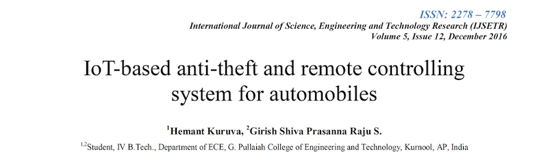
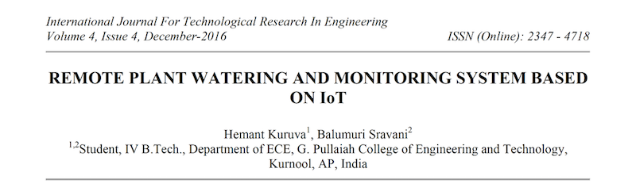

Hemant Kuruva
Home
Publications
My publications
1. Kuruva, H., Raju, S. (2016). loT-based anti-theft and remote controlling system for automobiles. International Journal of Science, Engineering and Technology Research, 5(12), 3385-3389.

2. Kuruva, H., Balumuri, S. (2016). Remote plant watering and monitoring system based on loT. International Journal for Technological Research in Engineering, 4(4), 668-671.
